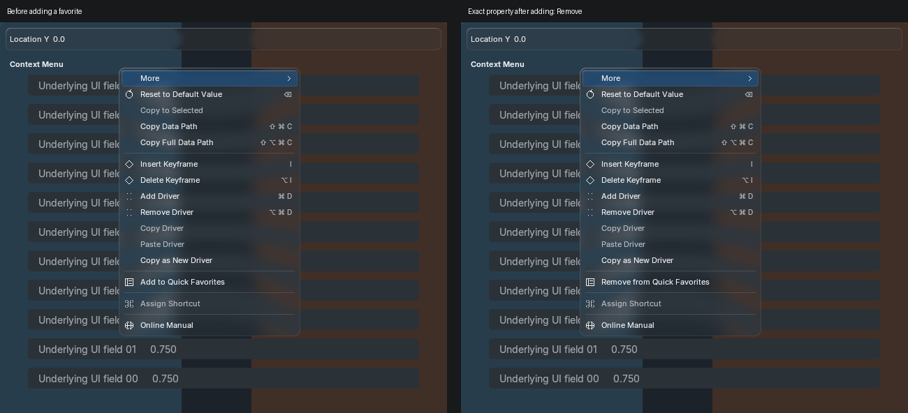
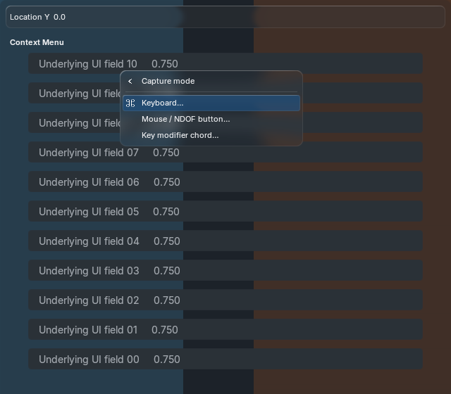
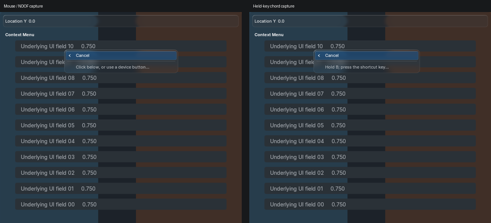
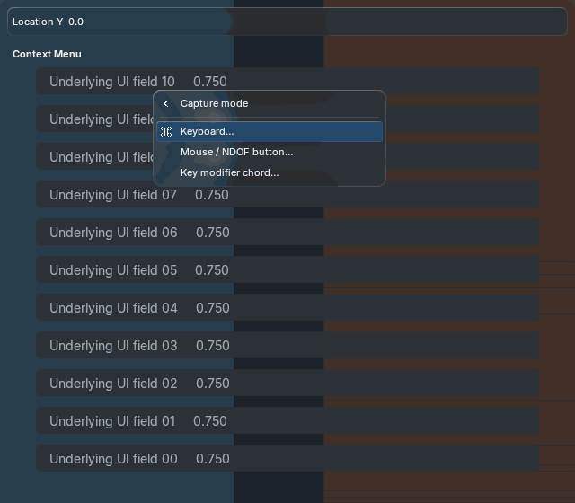
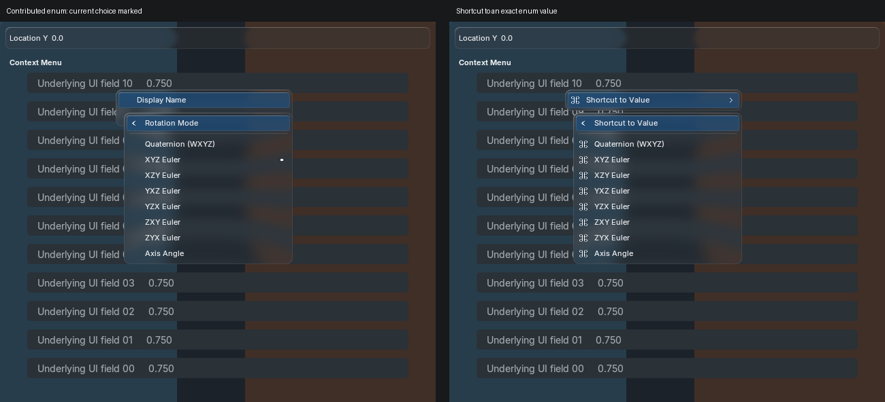
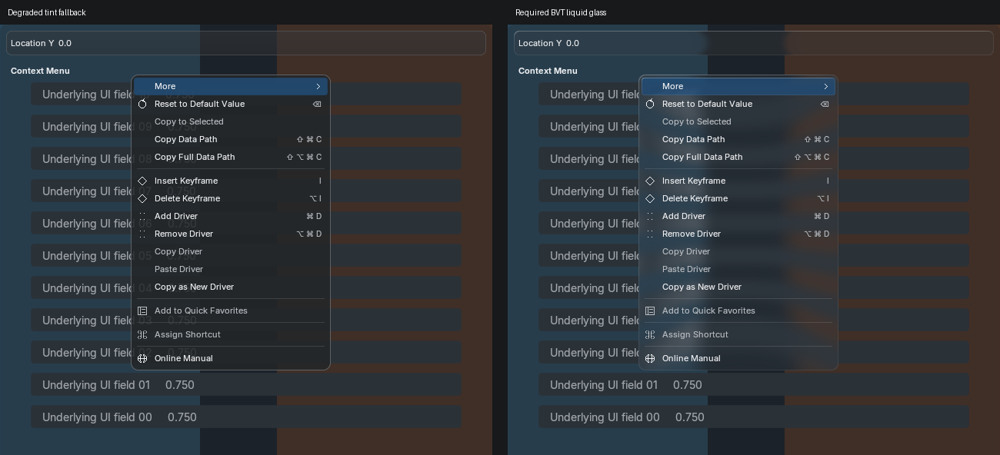

Actual Blender 5.2.2 Metal renders at 640×560, explicit REFERENCE theme. Behavior tests pass on exact macOS arm64 5.1.2/5.2.2 builds. These are implementation captures for Tyler's QA; no generated-reference acceptance is claimed.

Exact properties/components and operator arguments are looked up again before removal. Querying never marks preferences dirty; changes never save preferences.

Arrows and Enter select a mode before capture starts. Cancel returns to the mode chooser; navigation keys remain assignable during capture. The mode chooser shares the existing menu depth budget.


Keyboard, explicit mouse/NDOF-button and held-key modes share the existing painter, spring and glass. Escape/right-click cancel. Common global and View3D keymap conflicts are rejected.

Boolean/enum contribution rows preserve owner identity, disabled state and host commit rollback. Enum flags toggle the requested flag only. Operator choice rows retain invocation, arguments and pointer context. Inline nested menus preserve disabled state and invocation. Bounded deep snapshots isolate mutable arguments; stale registered operators and invalid pointer arguments cannot execute. Unsupported arguments and failing nested callbacks are isolated.

One backdrop production, one strong-blur production and five retained offscreens serve the captured menus and animation. No per-frame capture or blur. Resting and animation-disabled root pixels are equal.
Custom-popup shortcut dispatch, arbitrary editor/modal keymap hierarchy, scalar inline editors, dynamic enum callbacks, string contexts, broader platforms/themes/DPI/windows, and exact generated motion/reference acceptance remain open. Integration contract and limitations.
Historical rejected generation v1 and v3 evidence remain unchanged. Current capture has no allocation warning; this does not establish a fix for the prior intermittent Metal shutdown warning.
Source hashes, resources, timings · Capture log · Before/after metrics · New cases 5.1.2 · New cases 5.2.2 · Window input 5.1.2 · Window input 5.2.2